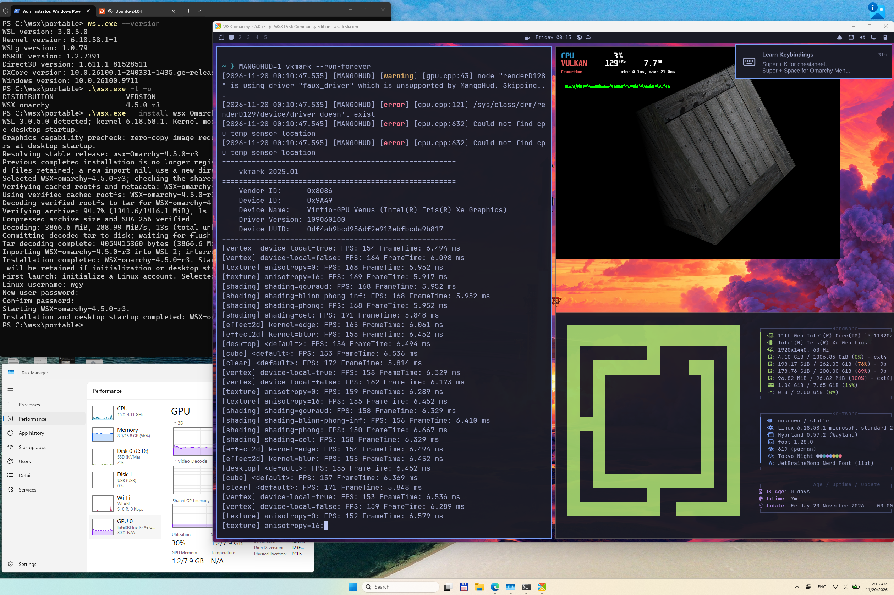
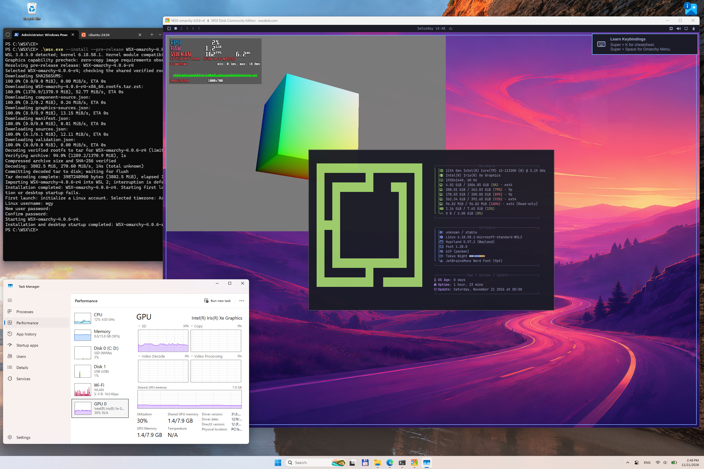

Desktop launch in the manager
Launch supported, verified WSX desktops from the same interface that shows your WSL distributions.
Store Edition · Pro
WSX Desk brings supported WSL 2 desktops into a Windows manager. With Pro, launch verified WSX desktops directly from the app.
Availability and Pro entitlement details depend on the Microsoft Store listing.


Launch supported, verified WSX desktops from the same interface that shows your WSL distributions.
The shared wsld engine connects supported Linux desktops to the Windows graphics runtime on compatible hardware.
Pro desktop launch uses a Microsoft Store entitlement. See the listing for availability and purchase details.
Desktop launch depends on a supported WSX image and a compatible Windows, WSL 2, GPU and driver combination.